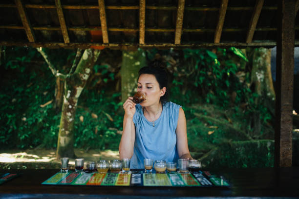
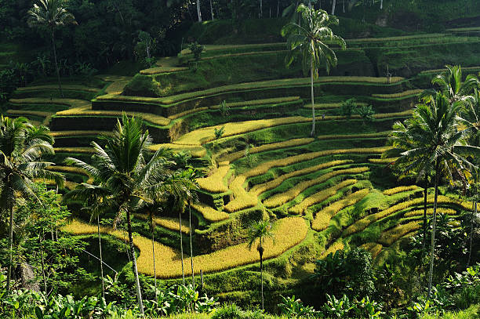
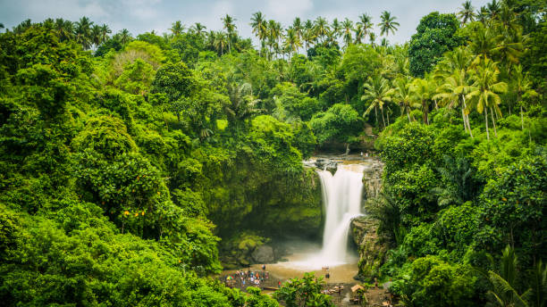

Ubud Full Day Tour
Price: Rp 650k






Inclusion : Private Car with Good A/C + Petrol + English Speaking Driver
Price is per 1 car (not per person), maximum 6 person/car
NOTE: Enterance Ticket, meals and drinks are not included
Price is per 1 car (not per person), maximum 6 person/car
NOTE: Enterance Ticket, meals and drinks are not included
Ubud Monkey Forest
Ubud Tegalalang Rice Terrace
Tirta Empul Temple (Holly Water Temple)
Luwak Coffee Plantation
Ubud Tegenungan Waterfall
Traditional Balinese House (pass by)
Ubud Tegalalang Rice Terrace
Tirta Empul Temple (Holly Water Temple)
Luwak Coffee Plantation
Ubud Tegenungan Waterfall
Traditional Balinese House (pass by)
Ubud Monkey Forest
Bali Ubud Monkey Forest is a nature reserve temple complex in Ubud Bali. Its full name as written on a welcome sign is the Padangtegal Mandala Wisata. Bali Ubud Monkey Forest is a small rain forest dwelt by some group of monkeys and other tropical animals. It is strategically located in the hearth of Ubud Village. Monkey Forests in Balinese language called Wanara Wana are spread out in the island and Ubud Monkey Forest itself own very important function of the continuity the monkey habitat in Bali. Meanwhile the local community own important role to keep this forest naturally in order to all wild animals able to live smoothly. A small tropical forest in the center of Ubud city offers very beautiful natural beauty, besides the monkeys here you can also visit the temple inside and also see the beauty of the green trees around this place which is a playground for the monkeys.
Location Ubud Monkey Forest
The sacred sanctuary of Monkey Forest is located on the southern border of Ubud town around 3 kms south of central town with a leading road also with the name ofMonkey Forest. The site can be reached by many sides besides from central town of Ubud, from eastern corner of Ubud and from southern area of Ubud. The distance from Kuta is around 55 kms, from Sanur around 40 kms, and from Nusa Dua area around 65 kms. The location is located in the center of Ubud, so it's very easy to find the location of Ubud Monkey Forest, armed with a google map and directions at each crossroads will make it very easy for you to find this place. And if you want to visit Ubud Monkey Forest, you visit other tourist destinations in Ubud, you can take the Full Day Ubud Tour package and if you only want to visit it within half a day, you can take the Half Day Ubud Tour package and of course the price very cheap and friendly on your pocket. In addition, we from Bali Tour provide transportation at low prices that you can rent if you only want to visit this Ubud monkey forest tourist destination.
Ubud Monkey Forest History
As for the establishment of Ubud Monkey Forest, it is not known exactly when it was founded, but based on the lontar Pura Purana records that the temples in Monkey Forest based on an analysis of a manuscript called Pura Purana ( meaning history of a Pura ) which is considered a holy writing the temple was built around 14th century during the reign of Pejeng Dynasty or it could also be called the beginning of the Gelgel Dynasty. If this assumption is taken the establishment of the temple would be before 1343 AD, not at the beginning of Gelgel Palace which is far behind around 17th century. The purpose for building the Ubud Monkey Forest is based on the teachings of Tri Hita Karana which emphasizes the relationship between humans and their environment. Located in a sacred area with an area of 12.5 hectares, where this sacred area is referred to as a sacred area where temples are located, in this area there are 3 holy temples that are sanctified by local people, including Pura Dalem Agung, Pura Beji and Pura Prajapati. Research from Udayana University in Bali also identified 115 tree species in the Ubud Monkey Forest. Some trees are considered sacred and are included in the Balinese Hindu worship rituals. For example the majegan tree whose trunk is used specifically to make temples, the banyan tree which is used for cremation ceremonies, and the pule bandak tree which symbolizes the spirit of the forest and is used to make sacred masks. In addition, there is also a long-tailed monkey habitat here, a total of about 800 monkeys that inhabit this Ubud Monkey Forest
Location Ubud Monkey Forest
The sacred sanctuary of Monkey Forest is located on the southern border of Ubud town around 3 kms south of central town with a leading road also with the name ofMonkey Forest. The site can be reached by many sides besides from central town of Ubud, from eastern corner of Ubud and from southern area of Ubud. The distance from Kuta is around 55 kms, from Sanur around 40 kms, and from Nusa Dua area around 65 kms. The location is located in the center of Ubud, so it's very easy to find the location of Ubud Monkey Forest, armed with a google map and directions at each crossroads will make it very easy for you to find this place. And if you want to visit Ubud Monkey Forest, you visit other tourist destinations in Ubud, you can take the Full Day Ubud Tour package and if you only want to visit it within half a day, you can take the Half Day Ubud Tour package and of course the price very cheap and friendly on your pocket. In addition, we from Bali Tour provide transportation at low prices that you can rent if you only want to visit this Ubud monkey forest tourist destination.
Ubud Monkey Forest History
As for the establishment of Ubud Monkey Forest, it is not known exactly when it was founded, but based on the lontar Pura Purana records that the temples in Monkey Forest based on an analysis of a manuscript called Pura Purana ( meaning history of a Pura ) which is considered a holy writing the temple was built around 14th century during the reign of Pejeng Dynasty or it could also be called the beginning of the Gelgel Dynasty. If this assumption is taken the establishment of the temple would be before 1343 AD, not at the beginning of Gelgel Palace which is far behind around 17th century. The purpose for building the Ubud Monkey Forest is based on the teachings of Tri Hita Karana which emphasizes the relationship between humans and their environment. Located in a sacred area with an area of 12.5 hectares, where this sacred area is referred to as a sacred area where temples are located, in this area there are 3 holy temples that are sanctified by local people, including Pura Dalem Agung, Pura Beji and Pura Prajapati. Research from Udayana University in Bali also identified 115 tree species in the Ubud Monkey Forest. Some trees are considered sacred and are included in the Balinese Hindu worship rituals. For example the majegan tree whose trunk is used specifically to make temples, the banyan tree which is used for cremation ceremonies, and the pule bandak tree which symbolizes the spirit of the forest and is used to make sacred masks. In addition, there is also a long-tailed monkey habitat here, a total of about 800 monkeys that inhabit this Ubud Monkey Forest
Ubud Tegalalang Rice Terrace
Ubud Tegalalang Rice Terrace is famous tourist attraction for beautiful rice terraces, many tourists who travel to Ubud stopped at this place to witness the beauty of the verdant terraced rice field scenery or having lunch at the restaurant while enjoying the beautiful scenery of terraced rice fields. Ubud Tegalalang Rice Terrace is one of the tourist icon in Ubud Bali. The Ubud rice terrace is designed very beautiful with exquisite hollowing rice field and precisely located on the hill bank. In this place, you will see the Balinese farmer do their rice field in oblique area complete with its system irrigation. The view of the terrace is often very stunning in the village of ubud, with the green scenery when the rice is thriving is very stunning which produces fantastic photos that will make this ubud tour very memorable
Tirta Empul Temple (Holy Spring Temple)
Tirta Empul temple also known as the Holy Spring Temple located in Tampak Siring, for more thousand years the Balinese worshippers has been come to this temple for having the holy water to purified the body from Bad luck, local people believe if the water in this temple has power to clean body from negative things. a myth described if this sacred spring temple is build by God of Indra give to the dead warriors which been killed by Arrogant king Maya Denawa, the dead warrior come alive after sprang the water from this holy spring temple. Now this temple is used by Hindus to purify themselves from negative influences that exist in the body and soul, and also many tourists come here to purify themselves in this spring water tirta empul pool. a very impressive spiritual experience to see the uniqueness of this tirta empul temple looks siring
Luwak Coffee Plantation
Bali Coffee Plantation or known with popular name Bali Agrotourism, is a place to see various Tropical plantations such as coffee robusta, pineapple, Balinese snake fruite(salak), plain Balinese potatoes, fruit stars, cacao, jack fruit, durian tree and many more, experience to see how to make Balinese coffee in very traditional ways, and taste the fresh of Balinese coffee or ginger tea with green view river valley and also they sell variety of theirs original Balinese coffee products, herb oil and etc and see the civet cat the most expensive coffee maker, wellknown as Luwak, its produce "Coffee Luwak", and this coffee luwak become the famous coffee with complete taste.
Tegenungan Waterfall
Tegenungan Waterfall is the beauty and hidden waterfall in Ubud village, exactly located in Tegenungan Kemenuh town, District Sukawati, Gianyar. To get to this waterfall take arund 16 km from Denpasar City or around 45 minutes driver by car. The water is furthermore clean and clear. It is suitable for washing or just playing around water and the most interesting Waterfall to visit during your holiday in Bali Islands. Tegenungan waterfall has always made a special impression in the hearts of tourists who have visited here, so it is no wonder that the Tegenungan waterfall tourist attraction has become popular among foreign and domestic tourists, and has become the most frequently visited waterfall tourist attraction on the island of Bali. Apart from its very strategic location, where it is located near the city of Ubud.
Traditional Balinese House
Traditional Balinese House Compound is one of the best place to visit in Bali. That located in the village of Batuan, Gianyar regency, Bali. 45 minutes drive from Denpasar airport. The buildings are mostly designed by Balinese architectures taking daily social Balinese life concept pointing out the hospitality. It is very charming concept of house building consisted on several building with different purpose of activities.
The Balinese family compound comprises a rectangular perimeter wall and several important structures, each significant and carefully laid out. The Balinese think that the family compound reflects the human body and the first step in building a new compound is consulting a Balinese calendar to choose a suitable day to buy the land and start work.